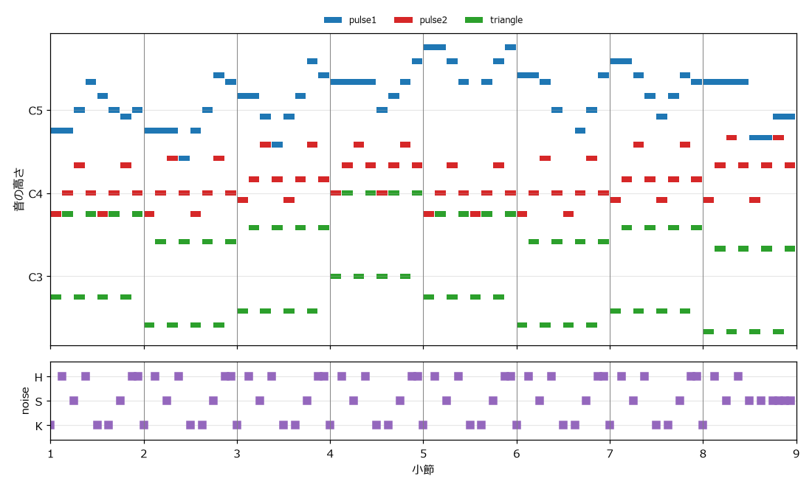

9. BGM を作る
この章では、4 つのチャンネルを使った短いループ BGM を作る。そのために、テキストで書いた楽譜を読み込んで音を合成する簡易シーケンサを実装する。
9.1. ゲームの BGM の特徴
ゲームの BGM は、映画や音楽 CD の曲とは異なる性質を持つ。
ループする: プレイヤーがその場面にどれだけ留まるかはわからない。そのため、曲の終わりから先頭へ途切れずに戻り、何度でも繰り返せるように作る。
前に出すぎない: プレイヤーの注意はゲームの画面と操作に向いている。BGM は場面の雰囲気を伝えつつ、効果音を邪魔しないことが求められる。
聞き飽きにくい: 同じ曲を長時間繰り返し聞くことになるため、単調すぎず、かといって情報量が多すぎない構成にする。
曲の冒頭を 1 回だけ演奏し、その後の部分を繰り返す構成もよく使われる。1 回だけ演奏する部分をイントロ、繰り返す部分をループ部という。本書の作例は、説明を簡単にするため、イントロなしの 8 小節をそのまま繰り返す。
9.2. チャンネルの役割分担
ファミコンの音源で曲を作るときは、4 つのチャンネルに次のように役割を割り当てるのが基本である。
チャンネル |
役割 |
理由 |
|---|---|---|
矩形波 1 |
メロディ |
倍音が多く、はっきり聞こえる。音量やデューティ比で表情を付けられる。 |
矩形波 2 |
ハーモニー（伴奏） |
メロディと同じ音色だと区別しにくいため、デューティ比や音量を変えて目立たせすぎないようにする。 |
三角波 |
ベース |
倍音が少なく、低い音でも濁らない。音量を変えられないため、一定の音量で鳴らすベースに向く。 |
ノイズ |
ドラム |
周期と減衰の速さを変えて、キック、スネア、ハイハットを表現する。 |
この割り当てでは、和音を鳴らすために使えるチャンネルは矩形波 2 の 1 つしかない。本書の作例では、矩形波 2 で和音の構成音を 8 分音符で順番に鳴らし（分散和音。音楽一般でいうアルペジオ）、和音の響きを表現している。
9.3. 楽譜の書き方
本書のシーケンサでは、楽譜を次の規則で書いた文字列で表す。空白で区切った 1 つのトークンが、1 ステップ（16 分音符 1 つ分）に対応する。
トークン |
意味 |
|---|---|
音名（例: |
その音を鳴らし始める |
|
直前の音を伸ばす |
|
休符（音を止める） |
|
ノイズチャンネルで、キック、スネア、ハイハットを鳴らす |
|
小節の区切り。読みやすくするためだけに使い、処理では無視する |
例えば、次の 1 小節（16 ステップ）は、A4 を 4 分音符（4 ステップ）、C5、E5、D5、C5、B4、C5 を 8 分音符（2 ステップ）で鳴らすことを表す。
1A4 - - - C5 - E5 - D5 - C5 - B4 - C5 -
この書き方は、「制作ツールの紹介」で紹介するトラッカーと同じ考え方である。トラッカーでは、時間が上から下へ流れ、1 行が 1 ステップに対応する。本書の楽譜は、それを横に並べたものと考えるとよい。
9.4. シーケンサの設計
シーケンサは、楽譜を次の流れで音に変換する。
図 9.1 シーケンサの処理の流れ
9.4.1. データ構造
音色、打楽器、チャンネル、曲の設定は、それぞれデータクラスで表す。@dataclass を付けたクラスは、フィールドを並べるだけで初期化の処理が自動的に作られる。
26@dataclass(frozen=True)
27class Instrument:
28 """音色の設定."""
29
30 wave: WaveType
31 duty: float = 0.5 # 矩形波のデューティ比
32 volume: float = 1.0 # 最大音量（0.0 から 1.0）
33 attack: float = 0.0 # 音量が最大になるまでの時間 [秒]
34 decay: float = 0.0 # 持続音量まで下がる時間 [秒]
35 sustain: float = 1.0 # 持続音量（最大音量に対する割合）
36 release: float = 0.0 # 音を止めた後の余韻の長さ [秒]
37 vibrato_depth: float = 0.0 # ビブラートの幅 [半音]
38 vibrato_rate: float = 6.0 # ビブラートの速さ [回/秒]
39 vibrato_delay: float = 0.2 # ビブラートがかかり始めるまでの時間 [秒]
Instrument は音色の設定である。波形の種類、デューティ比、音量、ADSR のパラメータ、ビブラートのパラメータを持つ。
42@dataclass(frozen=True)
43class Drum:
44 """ノイズチャンネルで鳴らす打楽器の設定."""
45
46 period_index: int # ノイズの周期インデックス（0 から 15）
47 length: float # 鳴っている長さ [秒]
48 volume: float = 1.0
49 short_mode: bool = False
52DRUMS: dict[str, Drum] = {
53 "K": Drum(period_index=12, length=0.10), # キック（バスドラム）
54 "S": Drum(period_index=6, length=0.15, volume=0.8), # スネア
55 "H": Drum(period_index=0, length=0.04, volume=0.4), # ハイハット
56}
Drum はノイズチャンネルで鳴らす打楽器の設定であり、DRUMS 辞書で 1 文字の名前と対応付けている。
打楽器 |
周期インデックス |
長さ |
考え方 |
|---|---|---|---|
キック（K） |
12 |
0.10 秒 |
周期を長くして低い「ドッ」という音にする |
スネア（S） |
6 |
0.15 秒 |
中くらいの周期で「タッ」という音にする |
ハイハット（H） |
0 |
0.04 秒 |
最も短い周期でごく短く鳴らし、「チッ」という音にする |
69@dataclass
70class Song:
71 """曲全体の設定."""
72
73 bpm: float
74 tracks: list[Track] = field(default_factory=list)
75 steps_per_beat: int = 4 # 1 拍を何ステップに分けるか（4 なら 16 分音符）
76
77 @property
78 def step_seconds(self) -> float:
79 """1 ステップの長さ [秒]."""
80 return 60.0 / self.bpm / self.steps_per_beat
Song は曲全体の設定であり、テンポとチャンネル（Track）の一覧を持つ。1 ステップの長さは、1 拍の長さ \(60 / \text{BPM}\) を 1 拍あたりのステップ数（既定は 4）で割って求める。140 BPM なら約 0.107 秒である。
9.4.2. 楽譜を解析する
parse 関数は、楽譜の文字列を「何ステップ目から、何ステップの長さで、何を鳴らすか」というイベントの一覧に変換する。
97def parse(score: str) -> tuple[list[Event], int]:
98 """楽譜からイベントの一覧と全体のステップ数を取り出す."""
99 tokens = tokenize(score)
100 events: list[Event] = []
101 current: tuple[int, str] | None = None # 鳴っている音の (開始ステップ, 値)
102 for step, token in enumerate(tokens + ["."]): # 末尾に休符を足して最後の音を閉じる
103 if token == "-":
104 if current is None:
105 raise ValueError(f"step {step}: '-' には伸ばす音が必要である")
106 continue
107 if current is not None:
108 events.append(Event(current[0], step - current[0], current[1]))
109 current = None
110 if token != ".":
111 current = (step, token)
112 return events, len(tokens)
トークンを先頭から順に見ていき、- なら直前の音を伸ばすので何もしない。それ以外のトークンが来たら、鳴っている音をその位置で終わらせてイベントとして記録し、新しい音を鳴らし始める。末尾に休符 . を 1 つ足しておくことで、最後の音も確実に記録される。先ほどの 1 小節を解析すると、次のイベントが得られる。
開始ステップ |
0 |
4 |
6 |
8 |
10 |
12 |
14 |
|---|---|---|---|---|---|---|---|
長さ |
4 |
2 |
2 |
2 |
2 |
2 |
2 |
値 |
A4 |
C5 |
E5 |
D5 |
C5 |
B4 |
C5 |
9.4.3. 1 音を合成する
envelope_for 関数は、指定した長さ（ゲート）だけ鍵盤を押したときの音量の変化を作る。ゲートの間はアタック、ディケイ、サステインに従い、ゲートが終わった後はリリースの時間をかけて 0 に下がる。
115def envelope_for(instrument: Instrument, gate: float) -> Signal:
116 """gate 秒だけ鍵盤を押したときの音量変化（リリース込み）を作る."""
117 times = [0.0, instrument.attack, instrument.attack + instrument.decay]
118 levels = [0.0 if instrument.attack > 0.0 else 1.0, 1.0, instrument.sustain]
119 t = np.arange(seconds_to_samples(gate + instrument.release)) / SAMPLE_RATE
120 held = np.interp(np.minimum(t, gate), times, levels)
121 if instrument.release > 0.0:
122 fade = np.clip(1.0 - (t - gate) / instrument.release, 0.0, 1.0)
123 held = held * np.where(t > gate, fade, 1.0)
124 return held
render_note 関数は、このエンベロープと音色の設定を使って 1 音を合成する。矩形波ではエンベロープを 16 段階に丸めて掛け、三角波ではエンベロープを使わない。
127def render_note(instrument: Instrument, note: str, gate: float) -> Signal:
128 """音名 note を gate 秒鳴らした音を作る."""
129 envelope = envelope_for(instrument, gate)
130 frequency = note_frequency(note_number(note))
131 if instrument.vibrato_depth > 0.0:
132 seconds = envelope.size / SAMPLE_RATE
133 freq: float | Signal = vibrato(frequency, seconds, instrument.vibrato_depth,
134 instrument.vibrato_rate, instrument.vibrato_delay)
135 else:
136 freq = frequency
137 phase = phase_from_frequency(freq, envelope.size)
138 if instrument.wave == "pulse":
139 # 矩形波は音量が 16 段階なので、エンベロープを丸める
140 return pulse_wave(phase, instrument.duty) * quantize_volume(envelope) * instrument.volume
141 if instrument.wave == "triangle":
142 # 三角波は音量を変えられないため、エンベロープは使わず鳴らすか止めるかだけにする。
143 # ただし、音の切れ目でクリック音が出ないように、両端に 3 ミリ秒のフェードを入れる
144 return fade_edges(triangle_wave(phase), 0.003) * instrument.volume
145 raise ValueError(f"音名を鳴らせない波形である: {instrument.wave}")
三角波の音の両端に 3 ミリ秒のフェードを入れているのは、クリック音を防ぐためである。実機の三角波チャンネルは、音を止めるとその時点の値を保ったまま止まるため、クリック音が出にくい。本書の方法では止めた瞬間に値が 0 に戻るので、その代わりに短いフェードを入れている。
打楽器は render_drum 関数で合成する。ノイズの音量を、打楽器の長さの間に直線的に 0 まで下げる。
148def render_drum(drum: Drum) -> Signal:
149 """打楽器 1 打分の音を作る."""
150 num_samples = seconds_to_samples(drum.length)
151 rate = CPU_CLOCK / NOISE_PERIODS[drum.period_index]
152 t = np.arange(num_samples) / SAMPLE_RATE
153 volume = quantize_volume(np.clip(1.0 - t / drum.length, 0.0, 1.0))
154 return noise_from_rate(rate, num_samples, drum.short_mode) * volume * drum.volume
9.4.4. チャンネルを合成する
render_track 関数は、1 チャンネル分のイベントを順に合成し、それぞれの開始位置に配置する。
157def render_track(track: Track, step_seconds: float, loop: bool) -> Signal:
158 """1 チャンネル分を合成する.
159
160 1 つのチャンネルは同時に 1 音しか出せないため、次の音が始まったら前の音の余韻は切る。
161 loop が True のときは、曲の終わりからはみ出した余韻を曲の先頭に重ねる。
162 """
163 events, total_steps = parse(track.score)
164 total = seconds_to_samples(total_steps * step_seconds)
165 buffer = np.zeros(total * 2) # はみ出した余韻を受け止めるため長めに確保する
166 starts = [event.start for event in events]
167 for i, event in enumerate(events):
168 gate = event.length * step_seconds
169 if track.instrument.wave == "noise":
170 sound = render_drum(DRUMS[event.value])
171 else:
172 sound = render_note(track.instrument, event.value, gate)
173 begin = seconds_to_samples(event.start * step_seconds)
174 if i + 1 < len(starts):
175 # 次の音の開始位置で打ち切る
176 limit = seconds_to_samples(starts[i + 1] * step_seconds) - begin
177 elif loop and starts:
178 # 最後の音は、次の周回の最初の音の開始位置で打ち切る
179 limit = total + seconds_to_samples(starts[0] * step_seconds) - begin
180 else:
181 limit = sound.size
182 sound = sound[:limit]
183 buffer[begin:begin + sound.size] += sound
184 if loop:
185 result: Signal = buffer[:total].copy()
186 result += buffer[total:total * 2] # 余韻を先頭へ折り返す
187 return result
188 used = int(np.max(np.nonzero(buffer)[0])) + 1 if np.any(buffer) else total
189 return buffer[:max(total, used)]
この関数には、実機の制約とループのための 2 つの工夫がある。
1 つ目は、1 チャンネルで同時に 1 音しか鳴らさないことである。リリースを設定した音は、ゲートが終わった後も余韻が続く。しかし実機では、1 つのチャンネルが次の音を鳴らし始めると、前の音は止まる。そこで、次の音の開始位置で前の音を打ち切っている（変数 limit）。
2 つ目は、ループのつなぎ目の処理である。曲の最後の音の余韻は、曲の終わりをはみ出すことがある。ループ再生では、はみ出した部分は曲の先頭と重なって聞こえるはずである。そこで、バッファを曲の 2 倍の長さで確保して余韻を受け止め、はみ出した部分を先頭に足し込んでいる（result += buffer[total:total * 2]）。これにより、ファイルの末尾から先頭へ戻ったときに、余韻が途切れずにつながる。
9.4.5. 全チャンネルをミキシングする
render_song 関数は、各チャンネルに gain を掛けて足し合わせ、最後に最大振幅を 0.8 にそろえる。
192def render_song(song: Song, loop: bool = True) -> Signal:
193 """全チャンネルを合成してミキシングする."""
194 tracks = [render_track(track, song.step_seconds, loop) * track.gain for track in song.tracks]
195 length = max(track.size for track in tracks)
196 mixed = np.zeros(length)
197 for track in tracks:
198 mixed[:track.size] += track
199 return normalize(mixed, peak=0.8)
gain は、チャンネル間の音量のバランスを調整する係数である。「音源チップの仕組み」で述べたとおり、実機のミキサーは非線形だが、ここでは単純な足し算で代用している。
9.5. BGM の作例
9.5.1. 楽譜
シーケンサを使って、イ短調の 8 小節のループ BGM を作る。コード進行は「最低限の音楽知識」で紹介した Am、F、G、C、Am、F、G、E である。
14MELODY = " | ".join([
15 "A4 - - - C5 - E5 - D5 - C5 - B4 - C5 -", # Am
16 "A4 - - - - - F4 - A4 - C5 - F5 - E5 -", # F
17 "D5 - - - B4 - G4 - B4 - D5 - G5 - F5 -", # G
18 "E5 - - - - - - - C5 - D5 - E5 - G5 -", # C
19 "A5 - - - G5 - E5 - . . E5 - G5 - A5 -", # Am
20 "F5 - - - E5 - C5 - . . A4 - C5 - F5 -", # F
21 "G5 - - - F5 - D5 - B4 - D5 - F5 - E5 -", # G
22 "E5 - - - - - - - G#4 - - - B4 - - -", # E
23])
24
25HARMONY = " | ".join([
26 "A3 - C4 - E4 - C4 - A3 - C4 - E4 - C4 -", # Am
27 "A3 - C4 - F4 - C4 - A3 - C4 - F4 - C4 -", # F
28 "B3 - D4 - G4 - D4 - B3 - D4 - G4 - D4 -", # G
29 "C4 - E4 - G4 - E4 - C4 - E4 - G4 - E4 -", # C
30 "A3 - C4 - E4 - C4 - A3 - C4 - E4 - C4 -", # Am
31 "A3 - C4 - F4 - C4 - A3 - C4 - F4 - C4 -", # F
32 "B3 - D4 - G4 - D4 - B3 - D4 - G4 - D4 -", # G
33 "B3 - E4 - G#4 - E4 - B3 - E4 - G#4 - E4 -", # E
34])
35
36BASS = " | ".join([
37 "A2 - A3 - A2 - A3 - A2 - A3 - A2 - A3 -", # Am
38 "F2 - F3 - F2 - F3 - F2 - F3 - F2 - F3 -", # F
39 "G2 - G3 - G2 - G3 - G2 - G3 - G2 - G3 -", # G
40 "C3 - C4 - C3 - C4 - C3 - C4 - C3 - C4 -", # C
41 "A2 - A3 - A2 - A3 - A2 - A3 - A2 - A3 -", # Am
42 "F2 - F3 - F2 - F3 - F2 - F3 - F2 - F3 -", # F
43 "G2 - G3 - G2 - G3 - G2 - G3 - G2 - G3 -", # G
44 "E2 - E3 - E2 - E3 - E2 - E3 - E2 - E3 -", # E
45])
46
47DRUM_BAR = "K . H . S . H . K . K . S . H H"
48DRUM_FILL = "K . H . S . H . S . S . S S S S"
49DRUMS = " | ".join([DRUM_BAR] * 7 + [DRUM_FILL])
各チャンネルの楽譜は、1 小節ずつ文字列のリストに並べ、" | ".join で 1 つの文字列にまとめている。行末のコメントは、その小節のコードである。
メロディ: 各小節の頭にコードの構成音を置き、その間をスケールの音でつないでいる。5 小節目からは音域を高くして、曲の後半で盛り上がるようにしている。
ハーモニー: コードの構成音を、低い音から上がって下がる形で 8 分音符で鳴らしている。最後の小節では、E の構成音（E、G#、B）を使う。
ベース: コードの根音を、8 分音符でオクターブを上下させながら鳴らしている。ファミコンの曲でよく使われるベースの型である。
ドラム: キックとスネアで拍を刻み、ハイハットで細かいリズムを加えている。最後の小節はスネアを連打するフィルインにして、ループの先頭へ戻ることを予告している。
9.5.2. 音色とテンポ
52def build_song() -> Song:
53 """曲データを組み立てる."""
54 lead = Instrument("pulse", duty=0.5, decay=0.3, sustain=0.6, release=0.05,
55 vibrato_depth=0.15, vibrato_rate=6.0, vibrato_delay=0.25)
56 chord = Instrument("pulse", duty=0.25, decay=0.12, sustain=0.2, release=0.02)
57 bass = Instrument("triangle")
58 noise = Instrument("noise")
59 return Song(bpm=140.0, tracks=[
60 Track("pulse1", lead, MELODY, gain=0.9),
61 Track("pulse2", chord, HARMONY, gain=0.5),
62 Track("triangle", bass, BASS, gain=0.5),
63 Track("noise", noise, DRUMS, gain=0.4),
64 ])
メロディは、デューティ比 50 % の太い音色に、ディケイとサステインで少し減衰する音量変化と、0.25 秒後からかかるビブラートを付けている。ハーモニーは、デューティ比 25 % の細い音色にし、すぐに小さくなるエンベロープと小さな gain で、メロディより目立たないようにしている。
図 9.2 は、作例の楽譜をピアノロール（横軸を時間、縦軸を音の高さとして音を棒で表した図）で表したものである。


図 9.2 BGM の作例のピアノロール
9.5.3. チャンネルごとの音
各チャンネルを単独で鳴らした音を次に示す。
矩形波 1（メロディ）
矩形波 2（ハーモニー）
三角波（ベース）
ノイズ（ドラム）
9.5.4. 完成した BGM
4 つのチャンネルを合わせると、次の BGM になる。
BGM（ループ 1 回分）
ループのつなぎ目を確かめるため、同じ音を 2 回つなげたものも用意した。8 小節目から 1 小節目へ戻る部分（約 13.7 秒の位置）で、音が途切れたりクリック音が出たりしないことを確かめてほしい。
BGM（ループ 2 回分）
ブラウザのプレーヤーで 1 回分のファイルをループ再生すると、つなぎ目にわずかな隙間が入ることがある。これはプレーヤー側の処理によるもので、ファイルの問題ではない。ゲームに組み込んだときのループ再生については「ゲームへの組み込み」で説明する。
9.6. サンプル音の生成
この章の音は、次のコマンドで output フォルダに書き出される。
1python bgm_example.py
9.7. 改造のヒント
作例を自分の曲に作り替えるときは、次の順で進めるとよい。
テンポを決める:
Songのbpmを変える。100 BPM 前後なら落ち着いた曲、150 BPM 以上なら急いだ雰囲気の曲になる。コード進行を決める: 「最低限の音楽知識」のコードの中から 4 つから 8 つ程度を選んで並べる。
ベースとドラムを書く: コードの根音でベースを書き、ドラムの型を決める。曲の土台がこれでできる。
ハーモニーを書く: コードの構成音を並べる。分散和音、和音の連打、アルペジオなど、形を変えると雰囲気が変わる。
メロディを書く: 「最低限の音楽知識」で述べた目安に沿って、コードに合うメロディを書く。
音色とバランスを調整する:
InstrumentのパラメータとTrackのgainを調整する。
9.8. 練習
Songのbpmを 100 と 180 に変えて、曲の印象がどう変わるか聞き比べてみよう。ハーモニーのチャンネルを、
Instrumentに新しい項目を追加して、アルペジオ（「音を形づくる」）で鳴らすように改造してみよう。1 回だけ演奏する 2 小節のイントロを追加し、イントロの後にループ部を 2 回繰り返した WAV ファイルを作ってみよう。